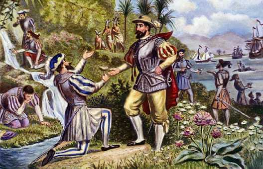
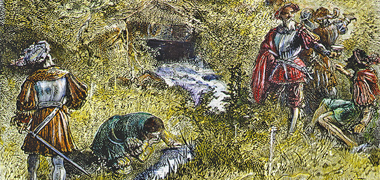
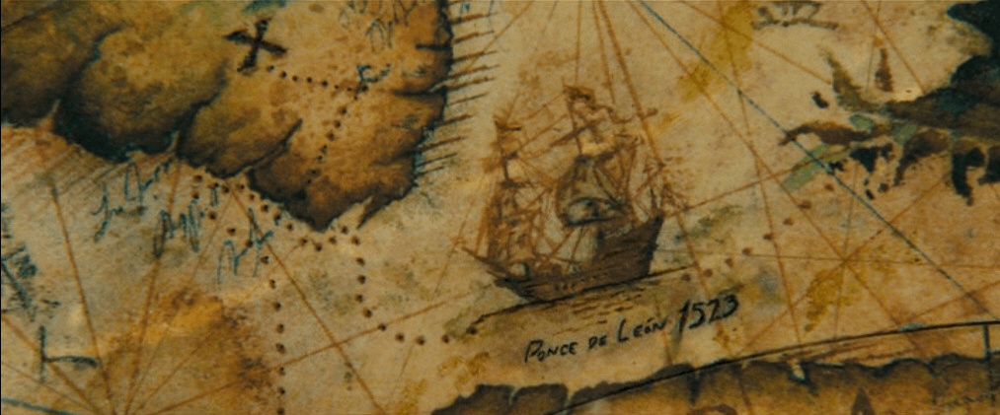

«Источник Молодости»
Легендарный родник, восстанавливающий молодость всякого, кто из него пьет или в нем купается.
Предистория
Согласно легенде, Хуан Понсе де Леон впервые услышал об источнике из уст своей индейской служанки. Рассказ так воодушевил конкистадора, что он начал расспрашивать о нем араваков, живших в Пуэрто-Рико. В результате выяснилось, что источник вечной молодости находится на загадочном острове Бимини, который лежит к северу от Эспаньолы. Араваки с Кубы не только рассказали конкистадорам о направлении в котором надо плыть, но и сказали, что один из их вождей уже давно живет на Бимини и пьет волшебную воду, оставаясь молодым и сильным.
Первые открытия
На собственные средства Хуан Понсе де Леон собрал команду и отправился в экспедицию, в ходе которой надеялся найти легендарный источник. Испанцы бросали якорь почти у каждого острова, к которому они приближались, но найти какой-либо источник, хотя бы смутно напоминавший рассказы индейцев все никак не удавалось. К весне 1513-го года конкистадоры уже совсем отчаялись добраться до заветной цели. Но в апреле их корабли подошли к земле и чем больше они приближались к берегу, тем больше росла уверенность, что наконец-то они нашли Бимини. В воздухе стоял густой, пьянящий аромат тропических цветов, птицы пели свои трели, а на белых прибрежных отмелях нежно плескалась теплая, согретая солнцем вода. Испанцы высадились на берег во время пасхальной недели, поэтому земля получила название Флорида (пасхальная неделя в Испании называется «Pascua Florida»).
Но, несмотря на красоту открытых им земель, Хуан Понсе де Леон вскоре окончательно отчаялся найти источник вечной молодости. Испанцы пили из всех водоемов, найденных ими на побережье Флориды, но никто не почувствовал прилива сил и молодости. Кстати говоря, при жизни великого конкистадора ходили легенды, что он все-таки испил из источника и стал бессмертным, просто не хочет никому открывать тайну его нахождения. Однако со смертью Хуана Понсе де Леона эти мифы быстро рассеялись. Кроме того, доброжелательность Флориды была напускной, очень скоро конкистадоры столкнулись с местными племенами, которые не только отказались показать источник, но и начали силой выгонять чужаков со своих территорий.
Последние попытки поиска
Спустя всего несколько недель после первой высадки, Хуан Понсе де Леон был вынужден отправиться обратно на юг. Хотя путешествие к Флориде заняло не так уж много времени, обратно конкистадоры попали в сильнейший шторм, один из кораблей даже пошел на дно. Испанцы вернулись в Пуэрто-Рико 19-го октября 1513-го года. Там Хуана Понсе де Леона ждала разочаровывающая новость — один из самых верных его помощников, кормчий Аламинос сообщил, что остров Бимини наконец-то найден, но источника на нем нет. Хуан Понсе де Леон решил, что заветный водоем скрывается где-то на западе Флориды, недалеко от того места, где он повернул назад. Но прежде чем оправиться на поиски источника вновь, конкистадор должен был вернуться в Испанию для того чтобы лично предоставить отчет королю об открытых им землях. На родине его очень тепло приняли и даже посвятили в рыцари, но долго Хуан Понсе де Леон там не задержался — монарх вскоре скончался, и конкистадор понял, что потерял сильного покровителя и теперь ему нельзя «потчевать на лаврах» долго, а необходимо вновь отправляться на освоение новых земель.
Но второе путешествие к берегам Флориды состоялось только в 1521-м году. Испанцы были хорошо подготовлены к этой экспедиции, их отряд состоял их двухсот хорошо натренированных и вооруженных солдат. После высадки на землю конкистадоры столкнулись с отчаянным сопротивлением индейцев. Некоторые источники полагают, что вторая экспедиция к Флориде была организована лишь с целью освоения новых земель и колонизации, другие же думают, что Хуан Понсе де Леон до сих пор страдал от навязчивой идеи поиска источника весной молодости. Согласно этим двум мнениям существуют две версии, говорящие о том, что случилось дальше. Одна гласит, что испанцы, столкнувшиеся с агрессией индейцев, были вынуждены объявить им войну. Другая говорит о том, что изначально туземцы были довольно мирно настроены, но конкистадоры захватили их в плен и применили пытки, в надежде узнать местоположение источника. Как бы то ни было, между индейцами и испанцами развернулась настоящая кровопролитная бойня. В ходе нее Хуан Понсе де Леон был ранен ядовитой стрелой и скончался в июле 1521-го года. На этом поиски источника вечной молодости закончились, судьба сыграла с отважным конкистадором злую шутку — оправляясь за вечной жизнью он нашел смерть.